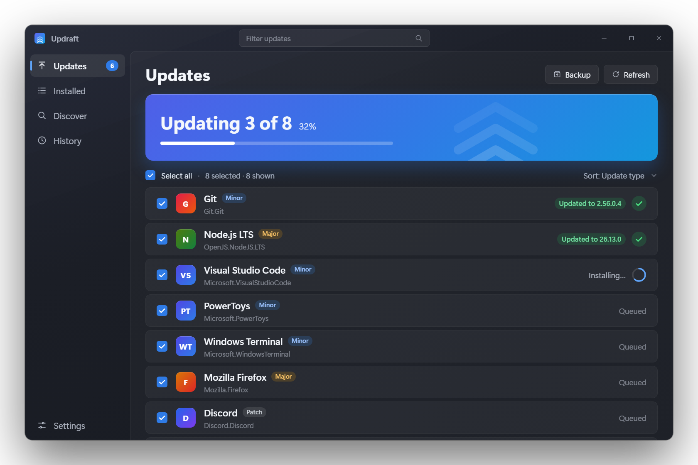
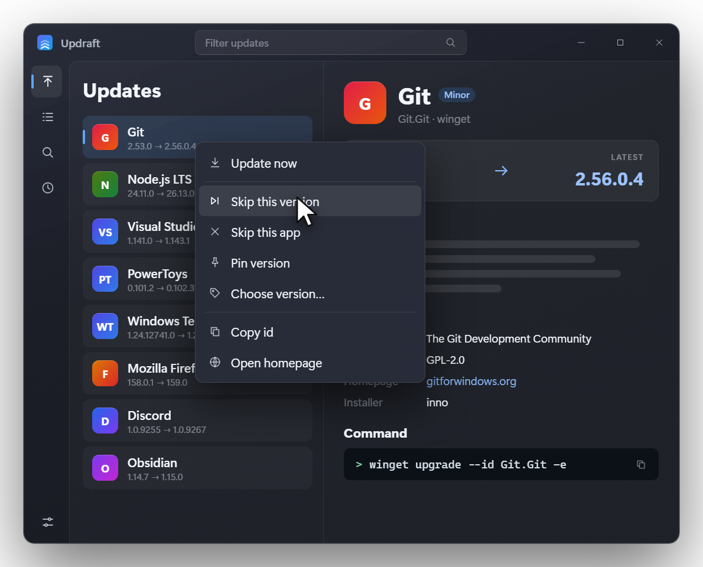
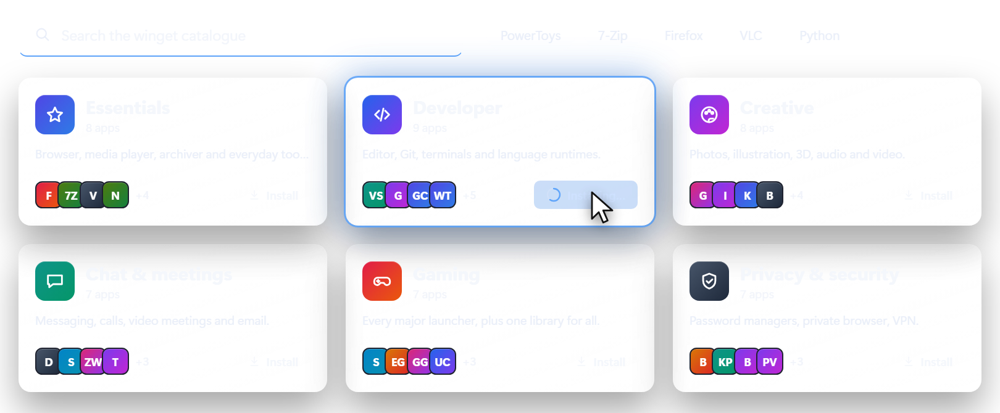
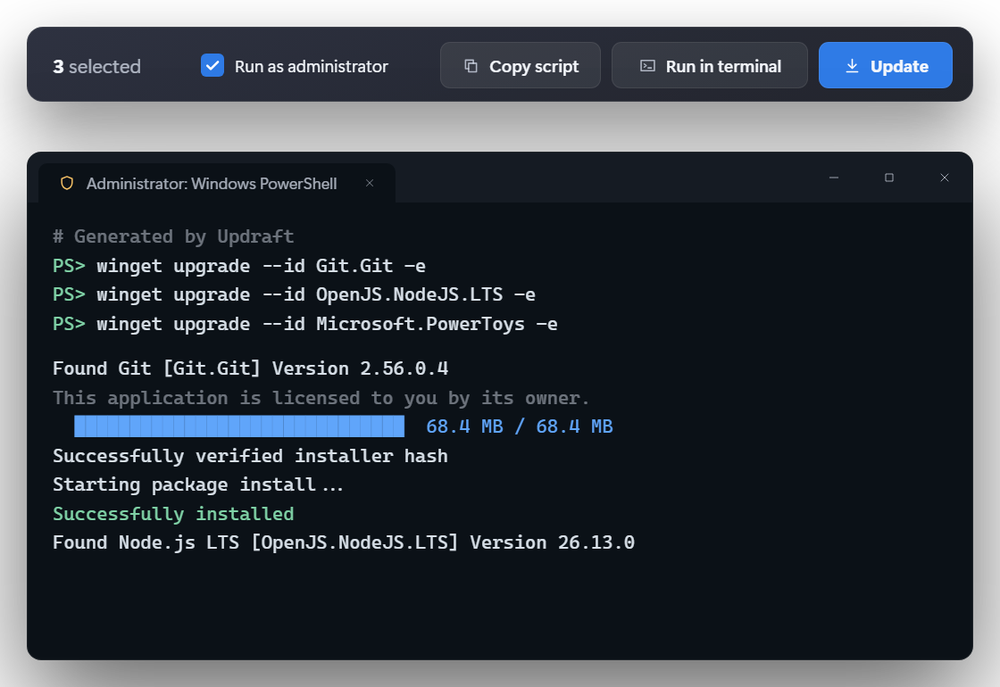
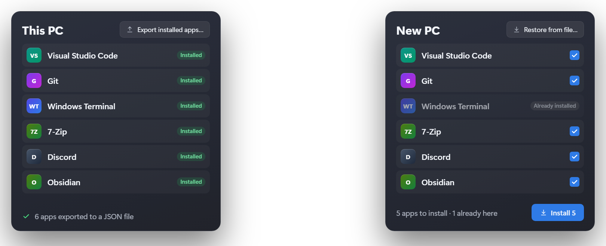

Intel / AMD (x64)
Most Windows PCs
Updraft is a simple, native Windows app for winget. See every update, tick the ones you want and install them, with live progress, right inside the app.
Updates
Updraft scans on launch and shows how many updates are waiting, split into major, minor and patch.

Details & control
Every app has a detail pane with release notes, publisher, licence, homepage and the exact winget command.
winget pin, or choose a version to install.
Discover & starter packs
Search the whole winget catalogue, or install a starter pack. Apps you already have are left alone.

Scripts & terminal
Updraft writes the exact winget commands for your selection. Paste them anywhere, or let Updraft open them in a terminal.

Backup & restore
Export your installed apps to a JSON file, then restore them on the new PC. Updraft ticks what's missing and skips what's already there.

Made for Windows
Built with WinUI 3 and the Windows App SDK. Small, quick to open, and it only talks to winget.
Mica backdrop, light, dark or system theme, and motion that follows the Windows animation setting.
Ctrl+1–4 pages, F5 rescan, F1 lists them all.
Every install, update and uninstall, kept locally.
Windows 10 (1809+) and 11.
No telemetry, no accounts, no network calls of its own.
Read the code, file an issue or send a pull request on GitHub.
Download
The installer needs no admin rights. The zip is portable. Both bundle the .NET runtime and Windows App SDK, so there's nothing else to install.
Most Windows PCs
Snapdragon X, Surface Pro X…
Needs Windows 10 1809 or newer with winget (built into Windows 11; check with winget --version). Builds come from GitHub Actions with SHA-256 checksums and build-provenance attestations on the release page. They aren't code-signed yet, so SmartScreen may ask you to choose More info, then Run anyway.
FAQ
No. It has no telemetry, accounts or network calls of its own. It runs your local winget, which contacts the winget sources as usual.
Yes. It ships with Windows 11 and recent Windows 10 as App Installer. If it's missing, Updraft explains how to get it.
Run Updraft.exe --demo to explore with sample data and simulated installs. Nothing is installed or removed, and winget isn't called.
No. Updraft is an independent open-source project. Windows and winget are trademarks of Microsoft Corporation.
Yes, please. Read CONTRIBUTING.md, then open an issue or a pull request.